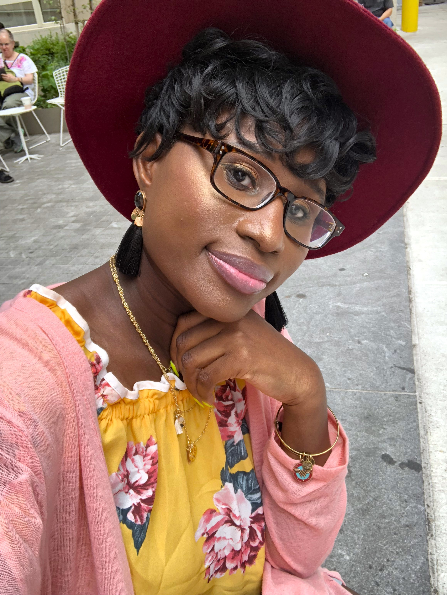
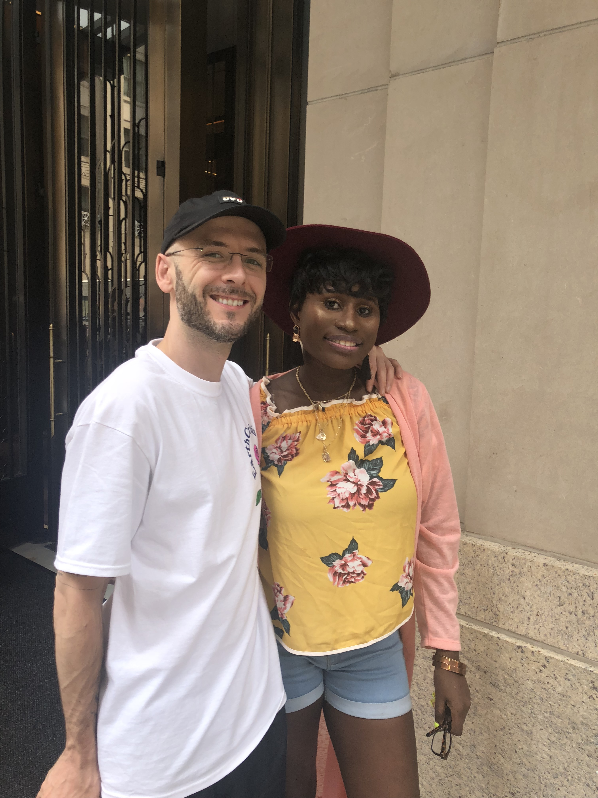

Later that day I started to get bored but wanted to grab a bite. But it was summertime and restaurants were extremly packed. So I decided that while I wait for Shawn I am going take another selfie. If you haven't notice I love taking pictures of myself. I have come a long way so I love capturing all my happy moments and this is one. BUT GUESS WHAT HAPPENED AFTER I TOOK THIS HAPPY SELFIE??? SCROLL DOWN FOR MORE
Capture all the happy moments it life so you can always relive them through your memories.
Drakes bestfriend and manager DJ walks up behind and say, "Wow! You are beautiful! I hope you are having a good day today. When I turned around to say thank you I was completely shocked and he goes What? Do you know who I am? I shook my head yes and said you are DJ the man behind Drake and OVO. He said I see you know your stuff. Then proceed to say, "Let's take a photo so you can remember this moment. I never hopped out my seat and handed off my phone to a stranger passing by. This was the awesome and cool photo they capturd of me and him. And for some reason Drake never came to my mind. I forgot he had a concert on random Monday.